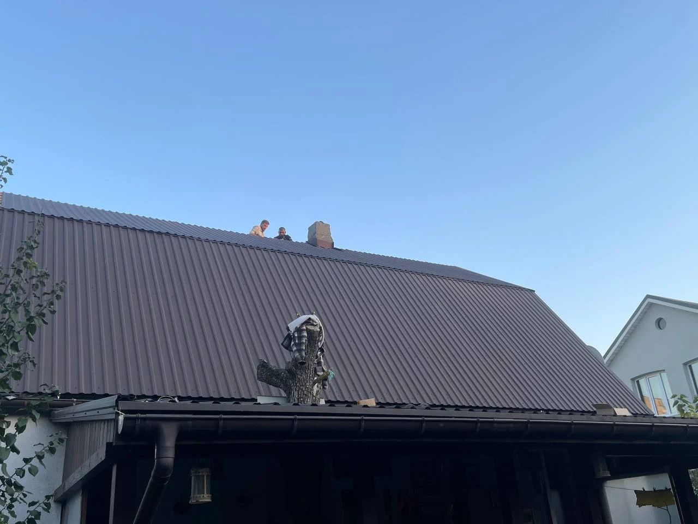
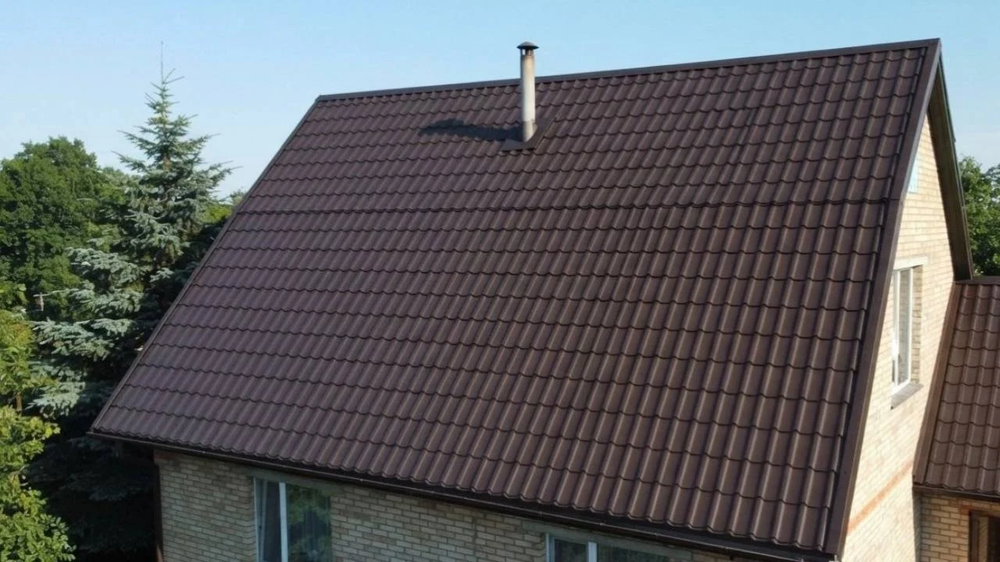
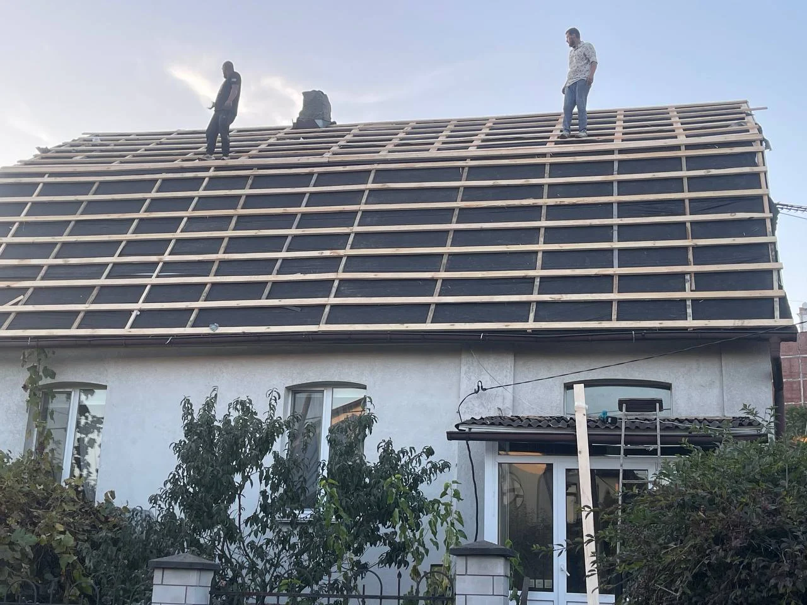
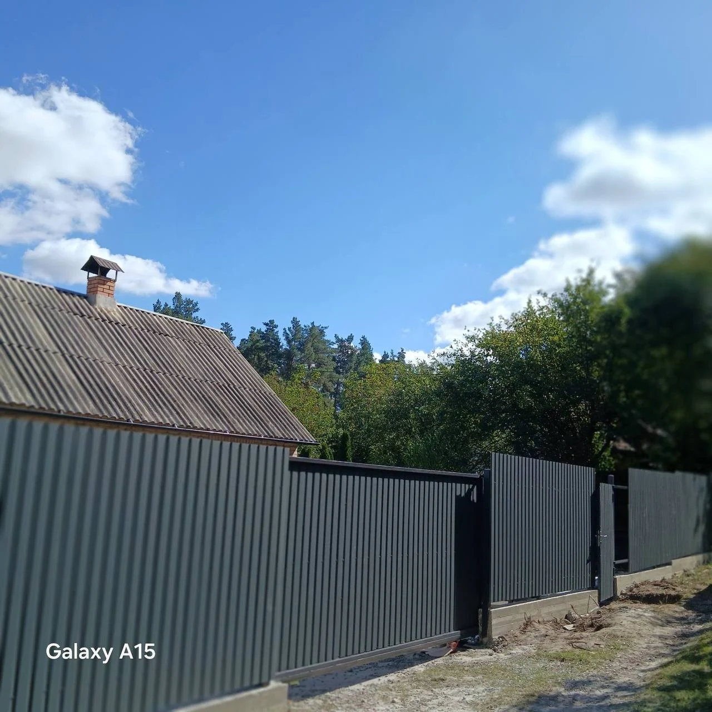
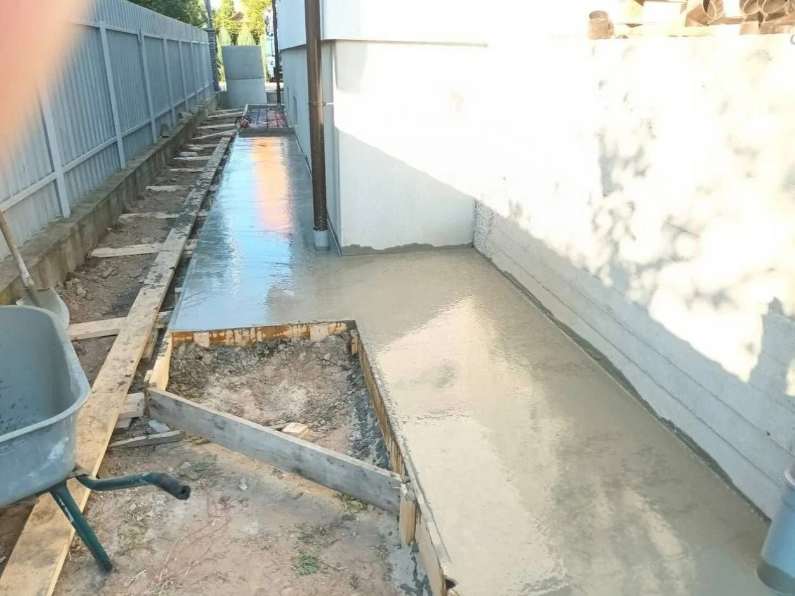
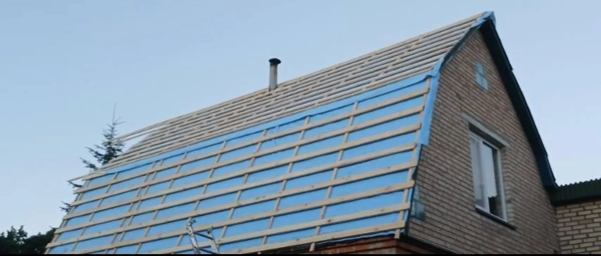

01 /
Дахи та покрівля
Демонтаж старого покриття, обрешітка, гідробар’єр, металочерепиця та металопрофіль. Утеплення, коньки, водостоки й фарбування.
Дивитися роботи ↗
МАКСИМ БУДІВЕЛЬНИК / КИЇВСЬКА ОБЛАСТЬ
Від нового даху до власного будинку.
Будівельна бригада, реальні об’єкти
та увага до вашої задачі.
ВИБРАНІ ПРОЄКТИ / РЕАЛЬНІ ОБ’ЄКТИ
НЕ РЕНДЕРИ. НАША РОБОТА.Нове покриття приватного будинку: від обрешітки та гідробар’єру до металочерепиці, коньків і водостоків.
Відкрити портфоліо ↗
ДЕМО · НЕ ДЛЯ ПУБЛІКАЦІЇ01 / РІЗНИЦЯ, ЯКУ ВИДНО
Один будинок. Різні етапи.
Перетягніть повзунок і подивіться на зміну покрівлі.

02 / НАПРЯМИ РОБІТ
Окрема робота або комплексне оновлення.
Обговоримо ваш об’єкт, обсяг і матеріали.
Демонтаж старого покриття, обрешітка, гідробар’єр, металочерепиця та металопрофіль. Утеплення, коньки, водостоки й фарбування.
Дивитися роботи ↗
Огорожі з металопрофілю та штахетника. Монтаж стовпів, стрічковий фундамент, паркани без фундаменту та ворота.
Дивитися роботи ↗
Фундаменти, стяжки, бетонні майданчики та вимощення навколо будинку. Можемо організувати матеріали й доставку.
Дивитися роботи ↗
Будинки й прибудови, кладка газобетону, тераси, навіси та альтанки. Утеплення, реконструкція, плиточні й внутрішні роботи.
Обговорити задачу ↗03 / РЕАЛЬНІ ОБ’ЄКТИ
Фото з робочих об’єктів.
Від перших етапів до готового результату.
Погляньте на процес і деталі робіт.
ОБГОВОРИМО ВАШ ОБ’ЄКТ
Оберіть напрям. Підкажемо, які деталі варто підготувати до розмови.
Підготуйте приблизні розміри, фото поточного стану та назву населеного пункту. Обговоримо покриття, матеріали й обсяг робіт.
04 / ВІД ДЗВІНКА ДО РЕЗУЛЬТАТУ
Працюємо у Вишгороді, Вишгородському районі,
Києві та по всій Київській області.
Зателефонуйте Максиму. Опишіть роботу та де розташований об’єкт.
Обговоримо обсяг, матеріали, доставку, вартість і строки до початку робіт.
Виконаємо погоджені роботи. Питання, що виникатимуть на об’єкті, обговорюємо з вами.
Є ОБ’ЄКТ АБО ІДЕЯ?
Зателефонуйте, щоб обговорити вашу роботу та її вартість.
066 949 12 99 ↗